ACERCA DE
¿Quiénes somos?
EcoGreen es un sitio web informativo acerca del medio ambiente. Nos preocupamos por los problemas ambientales y ayudamos a difundir la inofrmación necesaria para que las personas puedan informarse acerca de estos temas.
Misión
"Promover una cultura de reciclaje y sustentabilidad, educando y motivando a las personas a reducir, reutilizar y reciclar sus residuos de manera responsable. Nuestro compromiso es proteger el medio ambiente y contribuir a un planeta más limpio y saludable para las generaciones actuales y futuras, reduciendo el impacto de los desechos y fomentando prácticas sostenibles en todos los aspectos de la vida cotidiana."
Visión
"Ser líderes en la concienciación ambiental y el reciclaje, creando una comunidad comprometida con el cuidado del planeta. Aspiramos a un mundo donde el reciclaje sea parte de la vida diaria de cada persona y donde se minimicen los residuos y el uso de recursos naturales, promoviendo un futuro en el que las generaciones venideras vivan en un ambiente limpio y equilibrado."